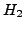

In this talk, we analyze the use of inexact solves in a Krylov-based model reduction setting and present the resulting structured perturbation effects on the underlying model reduction problem. We first show that for a selection of interpolation points that satisfy first-order necessary -optimality conditions, a primitive basis remains remarkably well-conditioned and errors due to inexact solves do not tend to degrade the reduced order models. Conversely, for poorly selected interpolation points, errors can be greatly magnified through the model reduction process.
We prove that when inexact solves are performed within a Petrov-Galerkin framework, the resulting reduced order models are backward stable with respect to the approximating transfer function. As a consequence, Krylov-based model reduction with well chosen interpolation points is robust with respect to the structured perturbations due to inexact solves. General bounds on the system error associated with an inexact reduced order model are introduced that provide a new tool to understand the structured backward error and stopping criteria. Several numerical examples will be presented to support the theoretical discussion.